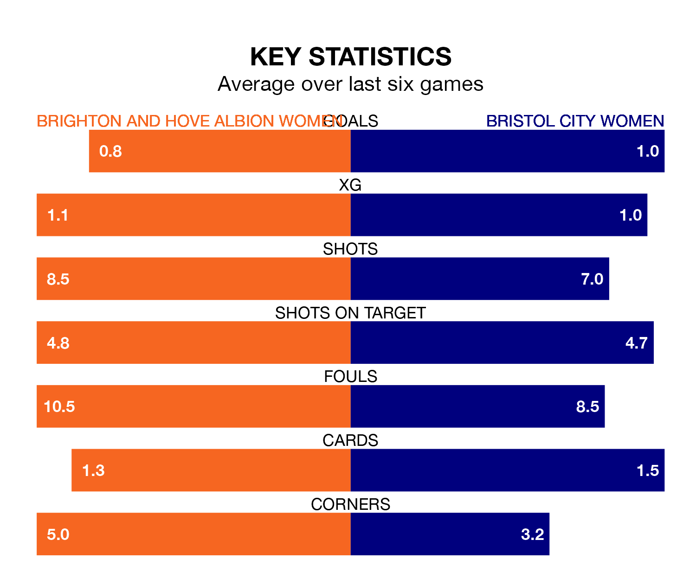

Sunday's early match at the Broadfield Stadium sees two relegation candidates play each other, as 10th-ranked Brighton and Hove Albion Women host bottom of the table Bristol City Women.
Brighton & Hove Albion have picked up eight points from their first eight FA Women's Super League games, with two wins and two draws.
That is three points more than the Robins have collected, having won one and drawn two.
In Elisabeth Terland, Brighton & Hove Albion have one of the league's sharpest shooters so far this season. She has notched seven goals in 10 appearances, to sit second in the scoring charts.
Her goal rate of one every 105 minutes is quicker than that of Amalie Grønbak Thestrup, Bristol City's top scorer with a goal every 172 minutes, and a total of five goals in 10 games.
The Seagulls are in disappointing form in FA Women's Super League, with one win and two draws from their last six games.
And also with a win and two draws over that period, the Robins' form is identical – they have both taken five points from 18.
In the last five years, Brighton & Hove Albion and Bristol City have played each other on six occasions. They won two each, and they drew twice.
On average, the Seagulls scored 0.8 goals and the Robins 1.0 in those matches.
Their last meeting was on May 9 2021, when Brighton & Hove Albion won 3-1 at home.
With 10 goals in 10 games so far this season, the home side are scoring at below the league average rate with 1.0 goals per game. And they are conceding more than average, letting in 22 goals at a rate of 2.2 per game.
The visitors are also below average scorers, with 1.0 goal per game, compared to a league average of 1.7. They have conceded 2.6 goals per game.
Brighton & Hove Albion's last match was on December 17, a 1-0 loss against Aston Villa Women.
Bristol City lost 3-0 against Chelsea Women last time out, also on December 17.
Updated: 15:34, 08/01/24